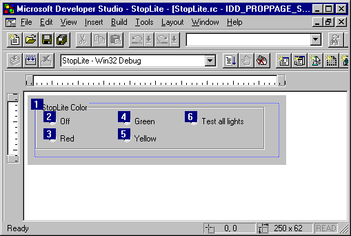

|
| ||
|
| ||
Paul Johns
Developer Trainer
October 22, 1996
Because of its length, this article has been divided into two parts for ease of reading on the Web. This is Part II.
Contents for Part II
Specification of the StopLite control
How I wrote StopLite
Properties
Control Properties
Ambient (Container) properties
Methods
Stock Methods
Custom Methods
Events
Stock Events
Custom Events
Making the Control Draw
Drawing the StopLite Control
Responding to Windows Messages
Property Pages
Notifying Your Container of Errors
From within a method call
In other situations
Notifying Your Container of Errors
A Brief Note About Security Issues
Code signing
Marking your control as safe
Using Visual C++ and Test Container to Debug the Control
Debugging output you can safely ignore
Creating a Web Page Using the ActiveX Control Pad
Conclusion/Where to Learn More
Next, we'll go through the modifications we made to write this control. Basically, the control will work as follows:
StopLite implements only one property, Color. Its possible values and their meanings are:
StopLite also uses the BackColor and ForeColor stock properties and the BackColor ambient (container) property (this is the container's background color).
StopLite has three methods: AboutBox, which displays the About box; Next, which changes the light to the next state (red, green, yellow, red...); and the stock Refresh method.
StopLite fires a bunch of events when the light changes state: Off, Testing, Stop, Go, and Caution. It also fires the stock Click event when either mouse button is clicked.
StopLite will draw itself as a vertical row of three lights. Each light will be either on or off; except in test mode, at most one light will be on at a time. The lights will be circular regardless of the width of the control, but the size of the lights will be as large as possible given the height of the control. A bezel will be drawn around the lights.
StopLite responds to left-button clicks (WM_LBUTTONDOWN) by calling the Next method. This gives you a way to call the Next method even when the control is embedded in a container, such as Word, that doesn't support calling methods.
StopLite is signed to allow users to install the control, even if their browser security is set to high. It also assures them that the control was actually signed by the entity described in the signing certificate and that the control has not been modified since it was signed.
StopLite is also marked as safe for scripting and safe for initializing, since there are no scripting commands nor data values that could cause it to damage a user's system. This allows pages that display StopLite controls to come up immediately without warning dialog boxes (if security is set to medium) or failures (if security is set to high).
I actually wrote the control in a different order than I'm presenting below. First, I modified OnDraw so that the control drew something besides an ellipse! Next, I implemented the first property, Color. That necessitated modifying the drawing code to draw the lights in the correct color. Once I had that working, I implemented the Next method and the OnLButtonDown mouse handler so I could see the light change without fiddling with a property page in the test container. (Most satisfying!)
At that point, I created my first Web page for the control using the ActiveX Control Pad, which makes adding controls and your choice of VBScript or JavaScript to Web pages a snap!
Then I added the remainder of the properties, events, and methods.
Finally, I got tired of all of the annoying warning dialogs every time I went to a Web page that contained my control, so I signed StopLite and marked it as safe for scripting and safe for initializing. I learned how to do this using the ActiveX SDK documentation.
But that's a difficult sequence in which to explain the control's code -- especially since you don't really want me to blather on about rewriting the OnDraw function fifteen times. So I've captured what I've learned and organized it in a more readable fashion.
Of all of the files in the project, only the StopLite.DEF file didn't change.
You can download the finished code all at once to view it in Developer Studio™, or you can shift-click to view an index in a new browser window.
(Shift-click to load the StopLiteCtl.H and StopLiteCtl.CPP files and follow along in the code.)
Think of properties as exposing the variables inside a control. In the StopLite control, we have three properties: the BackColor and ForeColor stock properties, and a custom property called Color, which represents the state of the stoplight (off, red, green, yellow, testing). In addition, StopLite uses the container's background color as an "ambient property."
Although properties act as if you're exposing a variable, that's just the programming model. Getting and setting a property can do any operations you choose. So one important way for a container to manipulate its controls is by initializing and changing its properties.
When you insert a control into a container in design mode, you have a chance to set its initial properties. The control passes any changes back to the container, which is responsible for saving the properties the control asks it to. (The control reads and writes its properties in DoPropExchange.) In this way, the state of the control is persistent, and we say that the control "implements persistence." It's the container design program's responsibility to save these properties when it saves the container's representation.
When the container is run and creates the control, it must provide the control with these initial property values.
In Visual Basic, the properties are saved as part of the form's .FRM file. In HTML pages, the properties are saved as <PARAM> tags inside the <OBJECT> tag that specifies how to create the control.
There are several categories and sub-categories of properties. They can either belong to (be implemented by) the control or belong to the container. Control properties are further broken down into custom properties (implemented by you) and stock properties (implemented by MFC). Container properties are called ambient properties; they are further categorized as standard ambient properties, whose meanings are defined by OLE, and extended properties, which are defined by a specific container. Extended properties are more properly thought of as properties of the extended control, which is a control inside the container that encapsulates and extends your control.
Of the four, custom control properties are most commonly used, so we'll discuss them first.
There are two types of control properties: Custom properties are implemented in code you write, while stock properties are implemented by MFC and accessed with COleControl member functions.
Custom properties are implemented by the code in your control. You will typically have a variable in your control class to hold these properties, although you can implement them via Get/Set methods to work in any way you choose.
ClassWizard offers two choices when implementing a custom property: as a pair of Get/Set methods, or as a member variable. In general, using a pair of Get/Set methods is more flexible because you can validate changes to the property and because you can represent the data in any way you choose. Also, if you want your property to be either read-only or write-only, it must be implemented with Get/Set methods.
You can specify that one, and at most one, property in your control is the "default" property. In StopLite, Color is the default property. This means that in your container, you can write:
StopLite1 = 2;
rather than:
StopLite1.Color = 2;
It's a minor convenience, but a nice one -- most useful when the control is strongly associated with a single value, such as an edit control. The OLE Automation tab in ClassWizard has a checkbox for this. Select the property you want to make the default and check Default Property.
Note that the default property shows up in the container's property list as _Color. You should not use this property -- use Color instead. This extra property is an artifact of the way MFC implements default properties.
In general, this is the method I recommend for implementing properties, because it's more flexible. It allows you to store the property in any way you choose, and it allows you to prevent the properties from changing to values you don't allow. It also allows read-only and write-only properties.
Custom properties implemented using Get/Set methods can be both read and written. When you're using ClassWizard to create the property, it's easy to make it read-only or write-only -- just delete the name of the Get method to make it write-only, or delete the name of the Set method to make it read-only. (But don't delete both, okay?)
The Color property in StopLite is implemented as a pair of Get/Set methods. Use the Add Property button on ClassWizard's OLE Automation tab and type "Color" in the External Name drop-down box. Select short as the type, then click on Get/Set methods. Check the function names, then click OK. To make Color the default property, select it while on the OLE Automation tab and click the Default Property checkbox. If you need more assistance with ClassWizard, consult Visual C++'s Books Online.
When you've done all this, ClassWizard will modify your dispatch map to include:
DISP_PROPERTY_EX(CStopLiteCtrl, "Color", GetColor, SetColor, VT_I2) DISP_DEFVALUE(CStopLiteCtrl, "Color")
It will also modify your .ODL file (typelib source) to include the following:
[id(1)] short Color; [id(0)] short _Color;
The fact that the second of the declarations has an ID of 0 is what makes Color the default property. (MFC takes care of the difference between Color and _Color.)
ClassWizard also generates skeletons for the GetColor and SetColor methods. I added a member variable m_color (using a right-click on CStopLiteCtrl in ClassView -- yea!) and added code to the functions as follows:
short CStopLiteCtrl::GetColor()
{
return m_color;
}
void CStopLiteCtrl::SetColor(short nNewValue)
// set color, redraw; throw error if parameter bad
{
if (nNewValue >= SL_NONE && nNewValue <= SL_TEST)
m_color = nNewValue;
InvalidateControl();
FireRightEvent();
SetModifiedFlag();
else {
ThrowError(CTL_E_ILLEGALFUNCTIONCALL,
"Color parameter out of range");
}
}
GetColor is simple, but SetColor requires a little explanation. First, we check to see if the value being used is valid. If it is, we set m_color, then update the control. (InvalidateControl redraws, FireRightEvent fires the appropriate event, and SetModifiedFlag lets MFC know that a property has changed.)
If the value passed is not valid, we throw an error using the ThrowError member function. This function is only used in methods, including Get/Set methods. In other situations, use FireError to fire the stock Error method. (Note that SetColor will not be called when the control is initialized -- only when the Color member is changed.)
You can also ask ClassWizard to implement a property as a member variable, without Get/Set functions. (Actually, there are Get/Set functions, but they're implemented by MFC so you don't have to write them.)
Although this is simpler, it has three disadvantages:
If the disadvantages above aren't a problem in your situation, you can implement a property as a member variable. For instance, if the type of a read/write property is BOOL, it makes sense to implement that property as a member variable.
By default, ClassWizard creates a change notification function, which will be called when the property changes. If we had implemented Color as a member variable, we would have called InvalidateControl, FireRightEvent, and SetModifiedFlag from this function.
Implementing a property as a member variable is very similar to implementing it as Get/Set methods, except that you click on Member variable in the last step of the procedure above. If you don't want a notification function, clear the name in ClassWizard before you click OK.
ClassWizard will automatically add the necessary code to DoPropExchange to save your properties at design time so they can be reloaded at run time.
In StopLite, ClassWizard and I added the following code:
PX_Short(pPX, "Color", m_color, SL_TEST);
// default to test state (all on)
The last parameter to PX_Short is the property's default value, which I added, specifying it as SL_TEST.
We also need to validate the initialization data to ensure that we're safe for initializing. Just after the line above, I added:
// check for load of bad value, fix
if (pPX->IsLoading()) {
if (m_color < SL_NONE || m_color > SL_TEST) {
m_color = SL_TEST;
}
}
It is possible for a container to pass a bad value into the control, so it's important to check it both here and in set functions.
In addition to custom control properties that you implement, a set of stock properties is implemented by MFC. To use them, just add them to your control with ClassWizard -- the code is already there to implement the properties. (MFC automatically provides persistence for stock properties.) Check out the list of stock properties by looking up Stock Methods/Properties in the class member list for COleControl.
To access the stock properties from your control, use pre-defined functions defined as members of COleControl. Most of the functions have names of the form GetXxxx and SetXxxx, where Xxxx is the name of the stock property. There are also a set of stock property notification change functions with names of the form OnXxxxChanged. These have reasonable default implementations, but you can override them if necessary.
StopLite uses two stock properties: BackColor and ForeColor. An important thing to remember about stock color properties is that they are stored as an OLE_COLOR, not as a COLORREF. Windows usually uses COLORREFs, so you'll need to call TranslateColor to translate from an OLE_COLOR to a COLORREF. (There doesn't appear to be a function to perform the inverse translation.)
To add these stock properties, use the Add Property button on ClassWizard's OLE Automation tab and select BackColor (ForeColor the second time...) in the External Name drop-down box.
When you're done, ClassWizard will modify your dispatch map to include:
DISP_STOCKPROP_BACKCOLOR() DISP_STOCKPROP_FORECOLOR()
It will also modify your .ODL file (typelib source) to include the following:
[id(DISPID_BACKCOLOR), bindable, requestedit] OLE_COLOR BackColor; [id(DISPID_FORECOLOR), bindable, requestedit] OLE_COLOR ForeColor;
That's all we need to do. We can now call GetBackColor and GetForeColor to get the colors to paint our control. As mentioned above, these stock properties are automatically persistent.
Ambient properties are properties of the control's container, not the control. They are therefore implemented by the container, not by the control. All ambient properties are read-only. You do not need to do anything to access these properties except call the appropriate functions.
There is a group of ambient properties for which dispatch IDs are predefined by OLE. You can access most of these properties by calling member functions of COleControl. To access the few properties for which there is no function, you can call GetAmbientProperty.
StopLite uses the ambient BackColor property to paint the area outside of the control's bezel so it will blend into the container's background. The code to do this is in OnDraw, and it's very simple:
CBrush brAmbientBack(TranslateColor(AmbientBackColor())); pdc->FillRect(rcBounds, &brAmbientBack);
The call to AmbientBackColor reads the ambient background color. Since this is another OLE_COLOR, it needs to be translated before we can create the brush for painting the background.
Some of the commonly used ambient properties include background and foreground colors, font, locale ID, and various properties associated with activation. Adam Denning's OLE Controls Inside Out (Microsoft Press, 1995) has a wonderful discussion of ambient properties.
Control containers are also free to implement any ambient properties they like. If you know the property's dispatch ID and type, you can access it by calling GetAmbientProperty.
When ambient properties change, the control will be notified. If you want to know about changes, override COleControl::OnAmbientPropertyChange. I did this in StopLite so that I could repaint if the background color changed. I used ClassWizard to write the code by adding a handler for OnAmbientPropertyChange. (This is on the Message Map tab.) The code I wrote to handle the notification checks to see which notification I've received and forces the control to repaint if the ambient background has changed. Note that even if more than one ambient property changes at a time, only one call to OnAmbientPropertyChange will be made. That call will pass DISPID_UNKNOWN as the DISPID. I check for that situation and force a repaint just to be safe.
void CStopLiteCtrl::OnAmbientPropertyChange(DISPID dispid)
{
// Repaint if ambient background changed or if several changed
if (dispid == DISPID_AMBIENT_BACKCOLOR ||
dispid == DISPID_UNKNOWN)
{
InvalidateControl();
}
// pass on to base class
COleControl::OnAmbientPropertyChange(dispid);
}
(Shift-click to load the StopLiteCtl.H and StopLiteCtl.CPP files and follow along in the code.)
Methods are function calls into the control -- how the container tells the control to do something. The StopLite control supports two methods: Next and AboutBox.
MFC provides implementation for a couple of stock methods, which you can easily add to your project using ClassWizard. You don't even have to write any code. The StopLite control implements the Refresh stock method, which forces the control to redraw itself.
To add the stock Refresh method to your control, use the Add Method button on ClassWizard's OLE Automation tab and select Refresh in the External Name drop-down box. ClassWizard will modify your dispatch map to include:
DISP_STOCKFUNC_REFRESH( )
It will also modify your .ODL file (typelib source) to include:
[id(DISPID_REFRESH)] void Refresh();
If you execute this method in most containers, you won't see any change in the control; it will simply repaint itself as it was. However, this method can be handy if the container knows it's drawn on top of the control and wants the control to redraw itself.
In addition to Refresh, MFC supplies the DoClick stock method, which forces the control to act as if it were clicked.
Most of the methods your control uses will be custom methods. Stock methods are implemented by MFC; custom methods are implemented by you. In addition to AboutBox, which was written by ControlWizard, the StopLite control implements only one custom method, Next. Next causes the stoplight to change to the next state in its cycle (red, green, yellow, red...).
To add the Next method to your control, use the Add Method button on ClassWizard's OLE Automation tab and type Next in the External Name drop-down. ClassWizard will modify your dispatch map to include:
DISP_FUNCTION(CStopLiteCtrl, "Next", Next, VT_EMPTY, VTS_NONE)
VT_EMPTY means that the return type of the Next method is void, and VTS_NONE means that the Next method takes no parameters. If the method had a return value, its return type constant (VT_xxx) would replace VT_EMPTY. If it took parameters, the types of the parameters would be represented by a comma-separated list of parameter type constants (VTS_xxx) instead of VTS_NONE. The list of constants is in the MFC documentation for DISP_FUNCTION.
ClassWizard will also modify your .ODL file (typelib source) to include:
[id(2)] void Next();
Next, we'll write the code for the method. If the stoplight is currently off, testing, at the end of the cycle, or in some other state, we'll set it to the first state in the cycle, which happens to be red. If it's already in the cycle, we'll set its state to the next in the cycle. Since we've changed the internal state of the stoplight, we must also redraw it by calling InvalidateControl, fire the appropriate event by calling FireRightEvent, and let MFC know that the state has changed by calling SetModifiedFlag.
Here's the code for Next:
void CStopLiteCtrl::Next()
// changes stoplight to next state, redraws
{
if (m_color >= SL_LAST || m_color < SL_FIRST) {
m_color = SL_FIRST;
}
else m_color++;
InvalidateControl();
FireRightEvent();
SetModifiedFlag();
}
(Shift-click to load the StopLiteCtl.H and StopLiteCtl.CPP files and follow along in the code.)
Events are the notifications your control sends to its container when something of interest has happened. The control does this by "firing" an event, which the container can handle with its own code.
MFC provides about a dozen stock events, mainly having to do with mouse clicks and key presses. Two events worth noting are the Error event, which we'll discuss in a bit, and the ReadyStateChanged event, which your control can fire to notify the container that its ready state has changed (for instance, from Loading to Interactive to Complete). This can be useful if your control needs to download a lot of data before it's ready to use.
StopLite implements one stock event, Click. To add this event, click the Add Event button on ClassWizard's OLE Events tab and select Click in the External Name drop-down box.
When you're done, ClassWizard will modify your event map to include:
EVENT_STOCK_CLICK()
It will also modify your .ODL file (typelib source) to include:
[id(DISPID_CLICK)] void Click();
No code is added or necessary since MFC implements the FireClick function.
Many of the events your control fires will be custom events. Custom events can pass parameters to provide more information about the situation that caused the event to be fired, although the StopLite control doesn't take advantage of that.
Rather, the StopLite control implements a separate event for each of its states: Stop, Caution, Go, Testing, and Off. Note that the events are not named for the color of the light, but rather for what I expect that the container might do with the event. For instance, the container could call the Stop method on all the cars on the road when it receives the Stop event from the StopLite control.
To add these events to your control, use the Add Event button on ClassWizard's OLE Events tab and type the name of each event in the External Name drop-down box. For these events, you won't need any parameters.
When you're done, ClassWizard will modify your event map to include:
EVENT_CUSTOM("Stop", FireStop, VTS_NONE)
EVENT_CUSTOM("Caution", FireCaution, VTS_NONE)
EVENT_CUSTOM("Go", FireGo, VTS_NONE)
EVENT_CUSTOM("Testing", FireTesting, VTS_NONE)
EVENT_CUSTOM("Off", FireOff, VTS_NONE)
VTS_NONE in the macro invocations above means that the events have no parameters. If the events had parameters, constants describing their types would be listed in order starting after the function name. The list of constants is in the MFC documentation for EVENT_CUSTOM.
It will also modify your .ODL file (typelib source) to include:
[id(1)] void Stop(); [id(2)] void Caution(); [id(3)] void Go(); [id(4)] void Testing(); [id(5)] void Off();
Finally, ClassWizard also adds the code you need to implement these events to the class' declaration in its header file:
void FireStop()
{FireEvent(eventidStop,EVENT_PARAM(VTS_NONE));}
void FireCaution()
{FireEvent(eventidCaution,EVENT_PARAM(VTS_NONE));}
void FireGo()
{FireEvent(eventidGo,EVENT_PARAM(VTS_NONE));}
void FireTesting()
{FireEvent(eventidTesting,EVENT_PARAM(VTS_NONE));}
void FireOff()
{FireEvent(eventidOff,EVENT_PARAM(VTS_NONE));}
To make it easier to fire events, I wrote a helper function called FireRightEvent. Call it after the light changes. It fires the appropriate event based on the stoplight's new state. Here's the code:
void CStopLiteCtrl::FireRightEvent()
// called whenever the stoplight state changes to fire the
// appropriate event -- must call AFTER m_color set to new value!
// Use the source browser to make sure you call each time
// m_color changed!
{
switch (m_color) {
case SL_RED: FireStop();
break;
case SL_YELLOW: FireCaution();
break;
case SL_GREEN: FireGo();
break;
case SL_NONE: FireOff();
break;
case SL_TEST: FireTesting();
break;
}
}
(Shift-click to load the StopLiteCtl.H and StopLiteCtl.CPP files and follow along in the code.)
Compared with other types of Windows programs, the drawing code for ActiveX controls must meet some special requirements.
First, your control must draw on demand. Your control will be asked to draw itself whenever the container needs it to. The container will pass it a device context (DC) and two rectangles -- a bounding rectangle and a rectangle that encloses all the invalid regions. (If you're new to MFC and/or Windows, read up on device contexts.)
You must redraw at least the pixels enclosed by the invalid rectangle but may not draw any pixels outside the bounding rectangle. You can optimize your drawing code by not drawing pixels outside the invalid rectangle.
Note that the bounding rectangle's upper left corner is not guaranteed to be at (0, 0) -- it usually will be when drawing a control that's in the active state, but not, for instance, when drawing a control that's in the inactive state.
Second, you must paint your background. Unlike painting a window or drawing a view, you must paint your background in the control's OnDraw function. Background painting is not done automatically, nor is it done in some other function.
Third, you may not assume anything about the DC you've been passed, so you should select the pens, brushes, fonts, and colors you need when you draw your control. Some containers will pass your control a metafile DC in some situations, especially when printing. In order to work properly when drawing into a metafile, you must restrict your function calls to those supported in metafiles. See the MFC Encyclopedia article OLE Controls: Painting and OLE Control for more information. Finally, you must always select the old drawing objects back into the DC before your drawing function exits.
Lastly, the container, not the control, determines the control's size and position. Because the control doesn't determine the size and position of your control's visible area, you must either scale your output to fit in the window you're provided or supply scrolling -- or both. The StopLite control scales drawing according to the height of the control and centers it across the width. A control such as a grid will always draw using the same scaling but will provide scrolling if the area to be drawn is larger than the area the container gives you.
The requirements are even more complicated for transparent and other windowless controls, but that's beyond the scope of this article.
The OnDraw function for the StopLite control does three tasks: drawing the background, drawing the stoplight's bezel, and drawing the lights.
Here's the code for OnDraw:
void CStopLiteCtrl::OnDraw(
CDC* pdc, const CRect& rcBounds, const CRect& rcInvalid)
{
// 1. erase background using container's background color
CBrush brAmbientBack(TranslateColor(AmbientBackColor()));
pdc->FillRect(rcBounds, &brAmbientBack);
// 2. draw bezel using control's stock properties
// BackColor and ForeColor
// calculate size based on 40% of height
CRect rcBezel(rcBounds);
int nHeight = rcBounds.Height();
int nWidth = rcBounds.Width();
int nBezelWidth = nHeight * 40 / 100;
if (nBezelWidth > nWidth)
nBezelWidth = nWidth; // not more then width!
int nDeflateBezel = (nWidth - nBezelWidth) / 2;
rcBezel.DeflateRect(nDeflateBezel, 0);
// create and select brush and pen
CBrush brBack(TranslateColor(GetBackColor()));
CBrush * pbrOld = pdc->SelectObject(&brBack);
CPen pnFore(PS_SOLID, 2, TranslateColor(GetForeColor()));
CPen * ppnOld = pdc->SelectObject(&pnFore);
// draw
pdc->Rectangle(rcBezel);
// select old brush, but not old pen
pdc->SelectObject(pbrOld);
// 3. draw lights using stock ForeColor, already selected
// translate enum code to bits for red, green, yellow
int nLights = TranslateLights();
// percentages are percentage of height
// draw red light on top, 6% down, 27% diameter
DrawLight(pdc, rcBounds, 6, 27,
(nLights & SLBIT_RED) ? SLCOLOR_RED : SLCOLOR_OFF);
// yellow light in middle, 37% down, 27% diameter
DrawLight(pdc, rcBounds, 37, 27,
(nLights & SLBIT_YELLOW) ? SLCOLOR_YELLOW : SLCOLOR_OFF);
// green light on bottom, 68% down, 27% diameter
DrawLight(pdc, rcBounds, 68, 27,
(nLights & SLBIT_GREEN) ? SLCOLOR_GREEN : SLCOLOR_OFF);
pdc->SelectObject(ppnOld);
}
This is the simplest of the three tasks: all we do is create a brush using the container's ambient background color, then use the FillRect function to draw a rectangle filling the entire control with that brush. FillRect automatically takes care of selecting and deselecting the brush.
This is a little trickier because we have to scale the output rather than just paint the entire control. Specifically, we'd like the bezel to be a little wider than the lights, but not the full width of the control. First, we set up a rectangle that will be the size of the bezel (when we're done with it). We calculate the bezel size to be 40 percent of the height and then calculate how much to deflate the left and right sides of the rectangle. (Deflating it keeps it nicely centered.) Note that if the bounding width is less than the bezel width, the bezel width is set to the bounding width. This keeps us from drawing outside the bounding rectangle.
Once we have a rectangle for the bezel, we create a brush and select it into the DC, saving the pointer to the current brush returned by SelectObject so we can select it back in later. We do the same routine with the pen. In both cases, the color is selected from a stock property. Next, we draw the rectangle and select the old brush (but not the pen -- we're still going to use it) back into the DC.
This is the trickiest of all. To draw the lights, I wrote a couple helper functions -- TranslateLights and DrawLight -- which I'll discuss below. Note that I wrote the code for clarity, not top speed. If I were more concerned with speed, I'd be sure to calculate the various intermediate values as infrequently as possible.
Visual C++ includes a cool feature for adding member functions and member data: Just right-click on the class name in ClassView and select Add Function or Add Variable. When you do this, Visual C++ writes the header and a blank function skeleton for you. It even remembers to include the class name in the function definition. (I never remember this!)
The main idea is to call TranslateLights to get the bits representing which lights are on into the variable nLights, then call DrawLights for each light, passing the DC, the bounding rectangle, the distance to draw the light from the top (expressed as a percentage of the height), the diameter (as a percentage of the height), and the color to draw the light. SL_RED, SL_GREEN, and SL_YELLOW are defined as the RGB values for each color; SL_OFF is defined as dark gray. I measure drawing distances as percentages to make figuring out where to draw things easier.
Finally, we select the old brush (saved while drawing the bezel) back into the DC.
Here are the definitions of the SL_* constants. Note that I've put them inside the StopLiteCtrl class, so they're "local" to the class:
// stoplight state (values of m_color/Color property)
enum { SL_NONE = 0,
SL_FIRST = 1, // first light in cycle
SL_RED = 1, SL_GREEN = 2, SL_YELLOW = 3, // cycle order
SL_LAST = 3, // last light in cycle
SL_TEST = 4 }; // test MUST be last (see SetColor)
// bits corresponding to the three lights; used for drawing
enum { SLBIT_RED = 1, SLBIT_GREEN = 2, SLBIT_YELLOW = 4, };
// possible colors for light: off, red, green, yellow
enum { SLCOLOR_OFF = RGB(63, 63, 63), // dark gray
SLCOLOR_RED = RGB(255, 0, 0),
SLCOLOR_GREEN = RGB(0, 255, 0),
SLCOLOR_YELLOW = RGB(255, 255, 0) };
TranslateLights takes the Color property and sets the appropriate bits of the return value in a switch statement.
Here's the code for TranslateLights:
int CStopLiteCtrl::TranslateLights()
// sets appropriate bits for stoplight state
{
int nLights = SLBIT_RED; // safe default
switch (m_color) {
case SL_NONE: nLights = 0;
break;
case SL_RED: nLights = SLBIT_RED;
break;
case SL_GREEN: nLights = SLBIT_GREEN;
break;
case SL_YELLOW: nLights = SLBIT_YELLOW;
break;
case SL_TEST: nLights = SLBIT_RED | SLBIT_YELLOW | SLBIT_GREEN;
break;
}
return nLights;
}
DrawLight is somewhat complicated. First, we calculate the width and height of the control's bounding rectangle, then the diameter of the light in pixels. If the diameter is larger than the width of the bounding rectangle, we set it to the width of the bounding rectangle to ensure that we don't draw outside of the bounding rectangle.
We then calculate the left and top edges of the circle's bounding square, and construct a CRect object of that size and position. (We ensure that the CRect is entirely inside the bounding rectangle by using the IntersectRect function.)
Next, we create a brush of the appropriate color and select it into the DC, then draw the circle using the Ellipse function. Finally, we select the old brush back into the DC.
Here's the code for DrawLight:
void CStopLiteCtrl::DrawLight(
// draws an individual light centered in the control at
// vertical position specified
CDC* pdc, // DC in which to draw
const CRect& rcBounds, // control's rectangle
int nPercentDown, // top position as % of height
int nPercentDiameter, // diameter as % of height
COLORREF crColor // color to fill light
)
{
// calculate diameter in drawing units
int nHeight = rcBounds.Height();
int nWidth = rcBounds.Width();
int nDiameter = nHeight * nPercentDiameter / 100;
if (nDiameter > nWidth)
nDiameter = nWidth; // but not greater than width!
// create light's bounding rect
int nLeftEdge = (rcBounds.left + rcBounds.right - nDiameter) / 2;
int nTopEdge = rcBounds.top + nHeight * nPercentDown / 100;
CRect rcLight( nLeftEdge,
nTopEdge,
nLeftEdge + nDiameter,
nTopEdge + nDiameter);
// make absolutely sure we're within bounds --
// distort circle if necessary!
rcLight.IntersectRect(rcLight, rcBounds);
// create brush, draw, select old brush
CBrush brColor(crColor);
CBrush * brOld = pdc->SelectObject(&brColor);
pdc->Ellipse(rcLight);
pdc->SelectObject(brOld);
}
(Shift-click to load the StopLiteCtl.H and StopLiteCtl.CPP files and follow along in the code.)
Handling Windows messages is very much like handling messages in any MFC application -- you just add message handlers to your window, which in this case is derived from COleControl.
The StopLite control doesn't need any keyboard messages, but your control might. If you need to get messages for the enter key or the escape key, or if you need to use accelerators, I highly recommend the section on keyboard issues in Denning's OLE Controls Inside Out or "Developing OLE Custom Controls" by Scott Randall, available on the MSDN Library CD.
The StopLite control does respond to one Windows message: It selects the next state in sequence when you left-click on it.
To respond to left button clicks, use ClassWizard to add a handler for the WM_LBUTTONDOWN message, then call the Next function from within that handler before you call the base class' function.
ClassWizard adds the appropriate declaration to the header, then adds the following entry to the message map:
ON_WM_LBUTTONDOWN()
I modified the function it added so that it called the Next method. When I was done, the code looked like this:
void CStopLiteCtrl::OnLButtonDown(UINT nFlags, CPoint point)
// call Next method on left click, allow Click stock event to be fired
{
Next();
COleControl::OnLButtonDown(nFlags, point);
}
(Shift-click to load the StopLitePpg.H, StopLitePpg.CPP, StopLiteCtl.H, and StopLiteCtl.CPP files and follow along in the code.)
ActiveX controls can support property pages to make modifying the control's properties at design time much easier. The default page generated by AppWizard is blank except for a static text control that contains a message reminding you to finish the property page.
Doing the property page is even simpler than doing a dialog box in MFC, because ClassWizard will write the code to transfer data between your property page class' members and the properties. First, edit the dialog template (in our case, it's IDD_PROPPAGE_STOPLITE) to create the controls you'd like for your property UI. Our case has only one important property (Color) and the light can have only one Color value at a time, so I used a set of option buttons, or radio buttons, as the UI.

When using option buttons, you must set the tab order correctly, so the buttons are read properly, and be sure that only the first option button (Off) has the Group checkbox checked on its property page. The screen shot above shows that the tab order is correct.
It is also important that the buttons be in the same tab order as the values they represent in the Color property. That means I don't have to translate the values going in and out of the control.
Once I had the dialog box template set up correctly, adding the code was a snap -- or, more precisely, a double-click with the control key held down. All I did was Ctrl+double click on the Off button, and ClassWizard came up ready to add the code I needed to handle this property page. In the Add Member Variable box, all I needed to do was name the member variable (m_color in my case) and tell ClassWizard what property to attach it to (Color). ClassWizard generated all the right code, adding a declaration for the member variable to the header file:
int m_color;
initializing it in the constructor:
m_color = 0;
and adding lines to the DoDataExchange function so the value in the option buttons would be transferred back and forth correctly to the control's property:
DDP_Radio(pDX, IDC_OFF, m_color, _T("Color") );
DDX_Radio(pDX, IDC_OFF, m_color);
I didn't have to write a line of code. Even if you're not using Visual C++, getting a property page in exchange for four lines of code is a pretty good deal.
(Shift-click to load the StopLiteCtl.H and StopLiteCtl.CPP files and follow along in the code.)
In some situations, you'd like to communicate the errors to the container. There are two ways of notifying the container of errors, depending on whether the code that detected the error is in a method call (including Get/Set methods) or not (such as the code that processes a Windows message).
Within a method, call COleControl::ThrowError. StopLite does this in SetColor if the color requested is invalid:
if (nNewValue >= SL_NONE && nNewValue <= SL_TEST) {
// ...set color and redraw, etc.
}
else {
ThrowError(CTL_E_ILLEGALFUNCTIONCALL,
"Color parameter out of range");
}
Call COleControl::FireError. To do this, you must add the Error stock event to your control.
Internet Explorer 3.0 implements two mechanisms to ensure that users can load and run controls without harming their systems. First, it checks the signature of any code it installs. If the signature is missing or invalid, it will refuse to install the code (when security is set to high, the default) or at least notify you and allow you to decide (when security is set to medium). When security is set to none, Internet Explorer 3.0 doesn't check signatures.
Second, if your Web page attempts to initialize and/or script the control, Internet Explorer 3.0 checks to see if it's marked as safe for initializing and/or safe for scripting. If the control is not marked safe for what Internet Explorer 3.0 wants to do, the browser will ignore the control (when security is set to high) or display a dialog box (when security is set to medium).
To get around all of the dialog boxes and to run at all on Internet Explorer 3.0 when security is set to high, you have to sign your control and mark it as safe.
Signing your code only takes about 3.5K, which adds up to one second at 28.8Kbps, so it won't significantly slow Web page download times.
Code signing is the process of adding data to the control so that Internet Explorer 3.0 can ascertain two things:
Signing a control requires an electronic "certificate" provided by a "certificate authority" (CA). When you apply for a certificate, the certificate authority does some checking to determine that you are who you say you are, then issues the certificate. You can use this certificate with some utilities in the ActiveX SDK to sign your control. Note that you must guard this certificate and the private key carefully.Iif someone else obtains them, they can sign their code in your name.
You can find more information on code signing on the MSDN Online Web Workshop and in the ActiveX SDK.
I did not sign the StopLite control myself, as Microsoft has a central signing procedure for signing code. I just followed their procedure, and they signed the code for me. If you work for a company of any size, your company will probably have a centralized signing procedure.
Now that we know from whom the control came, how do we know it's safe to use? Remember that ActiveX controls, unlike Java applets, can access the full power of your machine -- for good or evil.
If it's not possible for your control to cause harm to a user's machine no matter what, you can mark it as safe. It is your responsibility to ensure that any control you mark is actually safe -- Internet Explorer 3.0 has no way to ensure that a control marked as safe is actually safe.
There are two categories of safety: safe for scripting and safe for initializing. Safe for scripting means that no matter what scripts do to manipulate your control, it will not harm the user's machine. Safe for initializing means that no matter what data is passed to your control from the Web page, it will not harm the user's machine. StopLite is both safe for scripting and safe for initialization and is marked accordingly.
There are two methods for letting Internet Explorer 3.0 know that your control is safe:
For more complete information on marking controls as safe, check out Signing and Marking ActiveX Controls.
Unfortunately, there is currently no method for signing Web pages. This would be handy for using potentially unsafe controls because the Web page author could assert that the page doesn't contain scripting or initialization that would cause an otherwise potentially unsafe control to damage a user's machine. Such a scheme would also require a way to ensure that the right controls are installed.
(Shift-click to load the StopLiteCtl.H and StopLiteCtl.CPP files and follow along in the code.)
The simpler method for marking a control safe for scripting and initialization is to add the necessary entries to the registry. I chose this method for StopLite.
Although it is possible to do this by hand or with a .REG file, self-registering controls should do this automatically when they register themselves. This is especially true for controls that will be downloaded over the Internet.
When the control unregisters itself, it will automatically remove all of its registry entries. Therefore, we don't need to do anything special to unregister the control. (We don't remove the categories because other controls might be using them.)
Here is the code I wrote to mark the control as safe for scripting and initializing. First I create the component categories, then I mark this particular control as safe in that category. This code might fail if it's being run on a system that doesn't have Internet Explorer 3.0 installed; because such a failure is okay (for instance, the user might be using the control in a Visual Basic application), we don't halt initialization for the control if this code fails.
// mark as safe for scripting -- failure OK
HRESULT hr = CreateComponentCategory(CATID_SafeForScripting,
L"Controls that are safely scriptable");
if (SUCCEEDED(hr))
// only register if category exists
RegisterCLSIDInCategory(m_clsid, CATID_SafeForScripting);
// don't care if this call fails
// mark as safe for data initialization
hr = CreateComponentCategory(CATID_SafeForInitializing,
L"Controls safely initializable from persistent data");
if (SUCCEEDED(hr))
// only register if category exists
RegisterCLSIDInCategory(m_clsid, CATID_SafeForInitializing);
// don't care if this call fails
This code requires that the helper functions CreateComponentCategory and RegisterCLSIDInCategory be defined. I copied definitions from the ActiveX SDK. The definitions are in Helpers.H and Helpers.CPP. (You can use these files as-is in your projects.) In STOPLITECTL.CPP, I also had to include a couple files:
// for marking the StopLite safe for scripting, initializing #include "helpers.h" #include <objsafe.h>
The file HELPERS.H also includes COMCAT.H which, like OBJSAFE.H, is in the ActiveX SDK.
If my control were not written using MFC, I'd do the marking in DllRegisterServer.
The other way to "mark" a control as safe is to implement the IObjectSafety COM interface. We won't be covering it in this article, but it is covered in Signing and Marking ActiveX Controls and in the ActiveX SDK.
Although slightly more complicated, implementing IObjectSafety has some advantages in that the interface allows the container either to ask whether the control is safe using GetInterfaceSafetyOptions or to request that it make itself safe using SetInterfaceSafetyOptions. (GetInterfaceSafetyOptions also allows you to ask the control what safety options it supports.) This flexibility allows you to write your control so that it can operate in either safe or unsafe mode. If the container requests that you be safe for scripting and/or initialization, your control can change modes and behave accordingly. If the container doesn't care about safety, your control can run in unsafe mode and exploit the full power of the machine.
At various points in the development process, you might want to be able to examine variables in your control, set breakpoints, and single-step the code.
This is quite easy. First, build the control for Debug. Then, provide the name of an executable that will host the control while debugging. I usually use the test container, which is at C:\MSDEV\BIN\TSTCON32.EXE in a standard Visual C++ installation. To change the container .EXE, use the "Settings" command on the Build menu and select the Debug tab. (You can debug in any container, although I find the test container most convenient.)
Once you have things set up, just select Debug.Go from the Build menu. The test container will start. As you insert the control in the test container, you'll get a number of messages you can safely ignore (see below).
At this point, if you haven't already, you can set breakpoints in your code, examine variables, single-step, and so forth -- just as if you were debugging an application.
If you're using another development system, check your documentation for debugging directions.
When you're debugging a control, you may get a series of messages in Visual C++'s debugging window. Although it's not documented anywhere, some of these messages can be safely ignored. For instance, when I debug the StopLite control in the test container using Visual C++ version 4.2, I get the following:
Loaded symbols for 'C:\WINNT35\system32\MFC42.DLL' LDR: WARNING ! MAJOR PERFORMANCE LOSS in TSTCON32.EXE LDR: Dll MFC42D.DLL base 5f400000 relocated due to collision with C:\WINNT35\System32\MFC42.DLL Loaded symbols for 'C:\WINNT35\system32\MFC42D.DLL' Loaded symbols for 'C:\WINNT35\system32\MSVCRTD.DLL' Loaded symbols for 'C:\WINNT35\system32\MFCO42D.DLL' Warning: constructing COleException, scode = DISP_E_MEMBERNOTFOUND ($80020003). First-chance exception in TSTCON32.EXE (MFCO42D.DLL): 0xE06D7363: Microsoft C++ Exception.
The first line is just notification that the debugging symbols for the release version MFC DLL were loaded when the test container, which uses the release version of the MFC DLL, was loaded.
The second and third lines (which begin with "LDR:") warn that the debugging version of the MFC DLL (used by the StopLite control) had to be relocated in my address space because it conflicted with the release version of the same DLL (which is being used by the test container). Although this means that it took a little longer to load the MFC DLL, it isn't a big deal because it only happens when you're debugging in the test container. You can ignore these messages. (Since Visual Basic apps don't use the MFC DLL at all, you won't get this message if you use a Visual Basic app as your test container.)
The next three lines are notifications that debugging symbols have been loaded.
The last two lines are notification that an exception has been thrown because the test container didn't provide a Color property to be read. This is okay, because we've provided a default value for the property. You won't get this error if you use a container that provides the property, such as a Visual Basic application.
In Visual C++ version 4.1, the only line I got was a warning about the exception for properties that couldn't be loaded from the container.
First-chance exception in TSTCON32.EXE (MFC40.DLL): 0xE06D7363: Microsoft C++ Exception.
Depending on how your container handles threads, you may also get occasional messages about threads exiting. You don't need to worry about these, either.
Now that we have a control, let's use it in a Web page!
The ActiveX Control Pad is the easiest way to create Web pages that contain ActiveX controls and scripting. And the price is right: It's free at http://microsoft.com/workshop/misc/cpad/default.asp! The ActiveX Control Pad is mainly intended to create .ALX files for the HTML Layout Control, which allows precise placement and layering of controls. However, the ActiveX Control Pad also works great for authoring Web pages with controls and scripting, so that's how we'll use it.
September 4, 1997 Editor's note: The HTML Layout Control technology, orginally released with Internet Explorer 3.0, is now natively supported by Internet Explorer 4.0. Please see the HTML Layout Control home page for further information.
When you start the ActiveX Control Pad, it brings up an empty page. The first step is to insert a control using the Insert ActiveX Control command on the Edit menu. You can set the size and initial properties using the default property sheet, or call up your custom property sheet by right-clicking on the control and selecting the bottom "Properties..." choice. Once you've done this, close the Edit ActiveX Control Window.
You'll see that the ActiveX Control Pad has inserted an <OBJECT> tag for you -- and placed an icon in the margin. Any time you'd like to edit the control's size or properties, just click on that icon.
Next, we'd like to insert some buttons. I don't want to use an OLE control for the buttons, so I just type an HTML <INPUT> tag in place: specifically, <INPUT TYPE=BUTTON NAME="NEXT" VALUE="Next Light">.
On the next line, I'd like an IELabel control, so I insert a paragraph tag (<P>), then use Insert ActiveX Control again to insert the label control ("Label Object" in my control list).
Now, let's do a little scripting. One of the best features of the ActiveX Control Pad is the Script Wizard, which helps you write code in your choice of VBScript or JavaScript. Just click on the Script Wizard toolbar button to start.
This is really intuitive: just select the event you'd like to handle, select the object you'd like to do something to, and tell it what to do. We'll do two events: the click of the Next button and the Stop event fired by the StopLite control.
First the Next button. Expand Next in the left pane, then click on OnClick. What we'd like to do is call the StopLite's Next method, so expand StopLite1 in the right pane, then double-click on Next. That's it. You can save your page and load it into Internet Explorer 3.0 now if you like -- or handle the Stop event.
To handle the stoplight's Stop event, follow basically the same procedure: select StopLite1. Stop, double-click on IELabel1. Caption, then type (into the dialog box that pops up) the text you'd like to see.
We're done for now. You can duplicate (or better!) my page on your own knowing what you now know. Save your work (I usually save it on my desktop) and test it in Internet Explorer 3.0!
Note that you'll get warning dialogs if your control isn't signed and/or marked as safe. And, if Internet Explorer's security is set to high, you won't be able to view the control at all. (For development purposes, it's often better to set the security to medium. We don't recommend setting it to none.)
We've created a simple control in MFC and embedded it in a Web page. We've looked at drawing the control, handling Windows messages, and implementing properties, methods, and events. But there are some things we haven't done.
First, we could add more functionality to the control -- the capability for blinking lights (even a blinking green light, as used in Vancouver, Canada), or turn arrows. We could even modify the sequence of lights to include allowing the yellow and red lights to be on at the same time just before the light changes to green, as they do in the United Kingdom. (Note that the drawing code design makes such a modification easy and safe.) Or we could write some of the other controls needed as components in a traffic simulation.
Then there are OCX 96 enhancements: making the control windowless for improved performance, transparent controls, and so on. Implementing dual-automation interfaces for better performance would be nice. Or we could just set up the control for licensing to users and designers.
We could also package up the control and its DLLs so that Internet Explorer 3.0 could download and run it automatically. We'll have an article about that subject soon.
The most important step is to sign the control by attaching a certificate to it so that people who download it will know who wrote it -- and so Internet Explorer 3.0 will use it without a dire warning message. Check out Signing and Marking ActiveX Controls for more information, as well as the section on Authenticode section of the Microsoft Security Advisor site  .
.
How can you learn more? Good information on new control features can be found in the ActiveX SDK and on the MSDN Online Web Workshop.
Another great source, as I've mentioned previously, is Adam Denning's OLE Controls Inside Out. And the Visual C++ 4.2 MFC Encyclopedia is great, as is the rest of the doc set. Finally, be sure to check out the MSDN Library CD by doing a titles-only search on "OLE Controls."
Enjoy! And start writing ActiveX controls for fun and profit!
Did you find this material useful? Gripes? Compliments? Suggestions for other articles? Write us!
© 1999 Microsoft Corporation. All rights reserved. Terms of use.